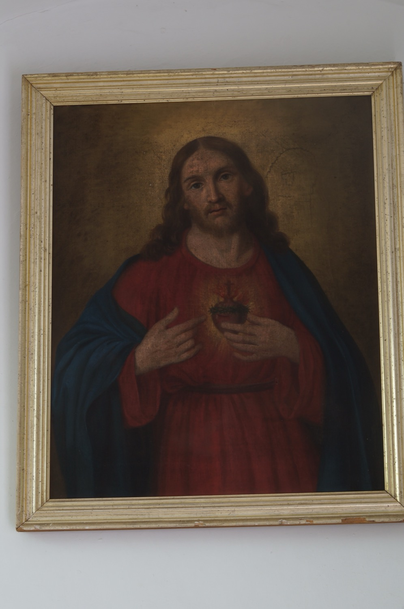

El Sagrat Cor de Jesús simbolitza l’amor i la misericòrdia de Jesús per la humanitat, expressats en un cor que crema d’amor. Aquesta pintura el representa amb els seus elements més característics: envoltat per una corona d’espines, com a recordatori de la Passió; en flames, símbol de l’amor ardent de Jesús per la humanitat; amb una ferida, que evoca el moment en què el centurió Longí li traspassà el costat amb una llança, i coronat amb una creu que recorda el seu sacrifici.